• Pate is made with ground dry corn, rice or acha. Mostly combined with vegetables (spinach), tomatoes, onions, peppers, garden eggs, locust beans, groundnuts, biscuit bones and minced meat are common in northwestern Nigeria, like Kano, Kaduna, Nassarawa and Plateau.
• Tuwo masara is a corn flour dish eaten in northern Nigeria.
• Tuwo shinkafa, thick rice pudding usually eaten with "miyan kuka" (a thick soup) and goat meat stew or "miyan taushe", a pumpkin stew made with spinach, meat (usually goat or mutton) and smoked fish. It is primarily served in the northern part of the country.
• White rice foreign white rice and local rice is served with local stews and sauces from different tribes. It is widely served with a thick tomato based stew.
Bean-based
|
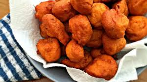
Akara
|
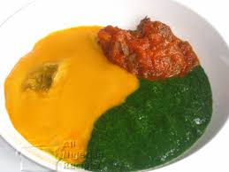
Gbegiri (a bean-based stew from Southwestern Nigeria )
|

Moin moin
|
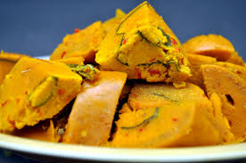
Okpa (made from Bambara nut flour in Southeastern Nigeria)
|
• Ekuru
• Ewa Aganyin
• Kiyaru Batonu in Kwara State
• Adalu (beans and corn)
Meat
Meat is used in most Nigerian dishes.
• Suya, from the north of Nigeria, is grilled meat coated with ground chili pepper, peanut powder, and other local spices. It is prepared barbecue-style on a stick. This is one of the most famous Nigerian delicacies and can be found within easy reach all over the country.

• Kilishi is made from meat that has been cut into very thin slices, which are then spread out to dry. A preparation of chili pepper, spices and local herbs is then prepared into a paste which is lightly brushed on both sides. This is then briefly grilled.
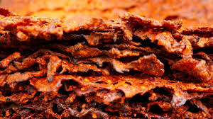
• Balangu refers to meat that has been grilled over wood/coal fire. Specifically, no seasoning is applied to bring out the natural flavor of the particular type of meat which may be goat, mutton or beef. Salt and spices can be added later according to taste. Most of these meaty delicacies are Hausa/Fulani.
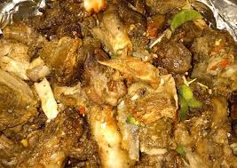
• Tsire refers specifically to meat which has a generous coating of peanut/chili powder. The meat may or may not be on a skewer.
• Nkwobi: Cooked cow legs smothered in a thick, spicy sauce; a classic dish originating from the southeast of Nigeria.
Soups and stews
• Banga soup is made from palm nuts and is eaten primarily in the south and mid-western parts of Nigeria.

• Ofe akwu is also made from palm nuts, but prepared more like a stew meant to be eaten with rice.
• Miyan kuka, very common among the Hausa people is made from powdered baobab leaves and dried okra.
• Miyan yakuwa is a famous Hausa soup.
• Ayamase is a stew made by blending several green or red scotch bonnets/peppers.
• Ewedu
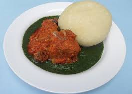
• Edikang-ikong is a vegetable soup which originated with the Annang, Ibibio and Efik people.

• Gbegiri is a bean-based stew from southwest Nigeria.
• Pepper soup is a light soup made from a mix of meat and fish with herbs and spices. This is one of the few soups in Nigerian cuisine that can be eaten alone and is not used as a sauce for a carbohydrate main dish such as fufu or pounded yam. It can also be made with nutmeg and chili peppers. It can be garnished with fish, beef, goat meat or chicken. Peppersoup is often an appetizer at official gatherings however, it is consumed also in the evening at pubs and social gatherings.

• Afang is a vegetable soup which originated with the Efik people, Ibibio people and Ananng people in the southeast of Nigeria.
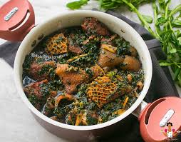
• Corn soup, also known locally as omi ukpoka, is made with ground dry corn and blended with smoked fish. It is a common food of the Afemai, especially people from Agenebode in northern Edo state.
• Draw soup (or okoroenyeribe) is made from okra or ogbono seeds cooked until they thicken.

• Atama Soup- a palm kernel soup
• Efo riro/Efo elegusi, a stew made from leafy vegetables and is common among the Yorubas.
• Egusi soup is thickened with ground melon seeds and contains leafy and other vegetables, seasonings, and meat. It is often eaten with dishes like amala, pounded yam (iyan), fufu, etc.

• Miyan taushe, A great blend of groundnut and pumpkin leaves spiced with pepper, Dawadawa (or Iru) & seasoning cubes. It is enjoyed best with Tuwo Shinkafa
• Maafe, a stew made with groundnuts (peanuts), tomatoes and onions as the base, can be infinitely varied with chicken, beef or fish and different leafy vegetables for subtle flavours. Groundnut stew is made with ground dry groundnuts and vegetables, fish, meat, local seasoning and palm oil by the Etsakor people in Edo state.
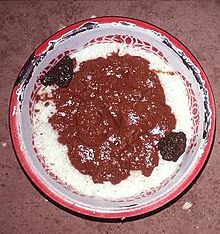
• Rice stew, similar to Maafe, is a stew made from goat, beef or chicken and cooked with a tomato, onion, pepper and groundnut sauce.
• Ogbono soup is made with ground ogbono seeds, with leafy greens, other vegetables, seasonings, and meat. Ogbono is also eaten with many dishes similar to pounded yam, amala, fufu, etc.
• White soup, also called ofe nsala, made with utazi leaves.

• Bitterleaf soup (ofe onugbu)

• Ofada stew is a palm-oil-based stew popular in western Nigeria. It's made with palm oil, unripe pepper and tomatoes, beef and locust beans. It's a stew for local ofada rice, also referred to as brown rice. It's usually served in 'ewe' (flat, broad leaves).To make the stew, palm oil is first bleached till it is thin and then used to cook locust beans A blend of mixed peppers and tomatoes are added, then the beef, and it's cooked for 10–15 minutes.
• Groundnut soup (Peanut soup)

• Ora (Oha) soup
• Edo Esan (Black soup)
• Ofe Owerri
• Achara soup mostly found in Abia State, Ndiwo, Itumbauzo.
Side dishes
Dodo (Fried plantain)
• Dodo is a side dish of plantains fried in vegetable or palm oil, preferably ripe plantain.
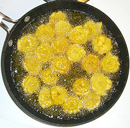
• Funkaso, millet pancakes
• Mosa, fermented corn ground into a thick paste, fried then sprinkled with sugar. It is an acquired taste. An alternative form made from very soft plantain, is mashed into a paste, mixed with dried black pepper, fried then sprinkled with sugar.
Puddings, pastes and porridges
• Moin moin is a savoury steamed bean pudding made from a mixture of peeled black-eyed beans and wrapped in a leaf (like a banana leaf).
• Plantain pudding commonly known as okpo ogede.
• Corn pudding locally known as okpo oka.
Yam-based
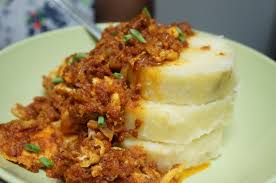
• Yam And Egg sauce
• Iyan, called pounded yam in English, is similar to mashed potatoes but all mashed and completely smooth with no yam chunks left.

• Amala (or aririguzofranca) is a thick paste made from yam, which has been peeled, cleaned, dried and then blended similar to iyan but normally darker (brown) in colour.
• Asaro, also known as yam porridge, is a popular Nigerian dish common in the western region. It is made by boiling and lightly mashing yam in rich tomato, chili and big red pepper sauce with palm oil or vegetable oil. It can be garnished with fish, meat or crayfish as desired.
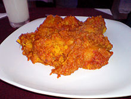
• Ikokore, also known as Ifokore, is a popular dish in the Ijebu areas of South-West Nigeria. It is similar to Asaro in preparation but Water Yam (Dioscorea alata) is used instead of Yam. The Water Yam ( called 'Isu Ewura' in Yoruba Language) is grated and some bits left in ungrated.
Cassava-based
|
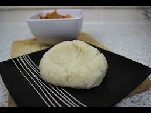
Eba, also called garri, is a very thick paste that is either rolled into balls or served like amala, and made from cassava (manioc).
|
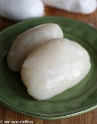
Fufu, a staple dish in Nigeria and most of West Africa.
|
• Lafun is basically like amala but much lighter in colour, and made from cassava. It is not to be confused with iyan; it tastes and smells totally different from the yam-based iyan.
Breakfast
• Masa originated from the north and is eaten both as lunch and breakfast. Rice is soaked and then ground. Yogurt is added, forming a thick paste, and left to ferment or yeast and sugar is added to taste. Poured into clay forms and heated from below, a spatula is used to flip over and gouge the masa out of the form. It is traditionally served with miyan taushe or honey.
• Sinasir is a flat masa, made by simply pouring the prepared rice paste into a frying pan, thus avoiding the need to flip it over as would be necessary with masa. This is a predominantly Hausa food.
• Alkubus is Hausa-Fulani steamed bread made from wheat, flour, yeast and water, put in moulds and steamed. It is served with Miyan taushe.
• Yams with red stew or scrambled eggs with diced tomato and onion.
• Ogi/Akamu.
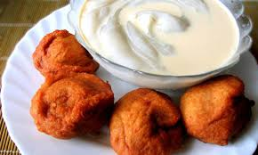
Snacks
• Chin Chin are best described as fried cookies made from wheat flour, eggs and butter.

• Puff Puff, fried sweet dough balls

• Akara is a beignet from a batter based on black-eyed beans. It is sometimes served for breakfast.
• Alkaki, made from wheat and sugar paste
• Kuli-Kuli, made from ground peanuts.

• Kokoro is a fried dry snack made from corn and garri (cassava). There are two different kinds.
• Meat pie, beef and vegetables enclosed in a pastry case.
• Wara, soft cottage cheese made from fresh cow milk.
• Plantain chips
• Coconut candy
• Dun Dun, roasted or deep-fried slices of yam. It may be fried in palm oil or vegetable oil; water is added to soften the yam as it cooks. Dun Dun is usually eaten with a sauce made of groundnut or palm oil, tomatoes, chili peppers and seasoning.
• Ojojo is a beignet made from grated/ground Water Yam (Dioscorea alata). Peppers, onions and seasoning are mixed with the grated Water Yam before being deep-fried. Water Yam is known as 'Isu Ewura' in South West Nigeria.
Beverages
• Kunu is a popular drink made of either millet, sorghum or maize.
• Fura da nono is a popular drink, especially across northern Nigeria, made of cooked then pounded millet or sorghum with a little cow's milk.

• Palm wine, which may be distilled into ogogoro.

• Zobo is a drink made of roselle juice (the Yorubas call the white variety Isapa)
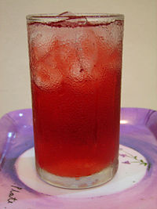
• Soya bean milk is a drink made from soaked, ground, and sieved soya bean.
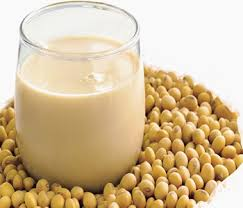